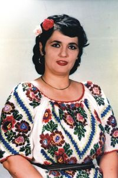
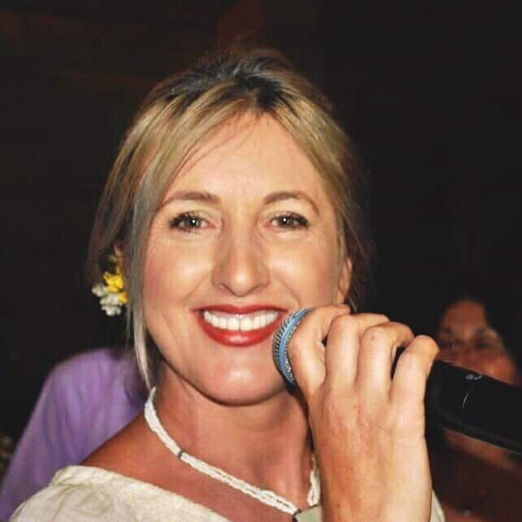
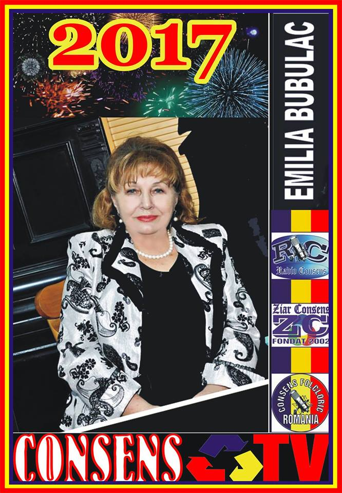
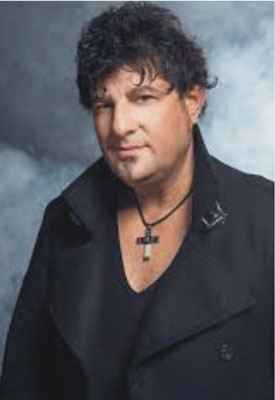
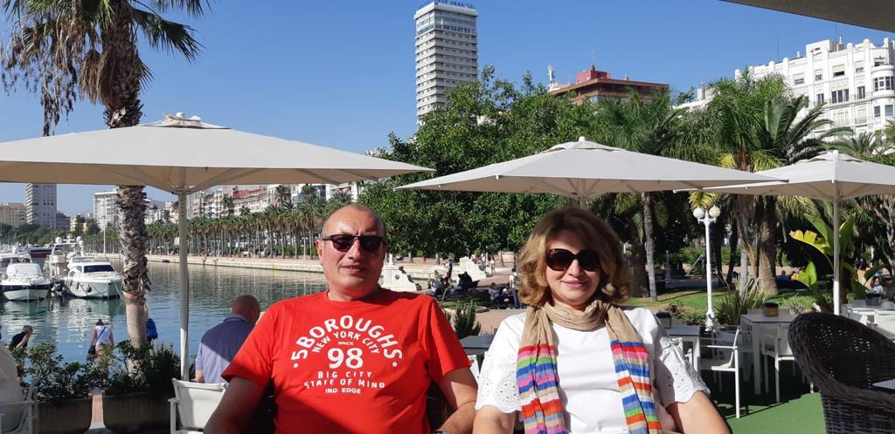
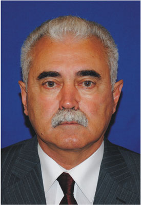
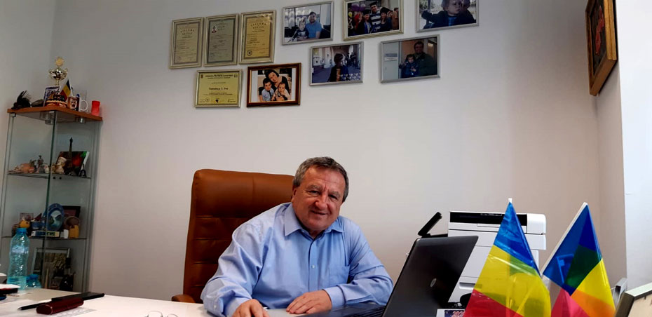

Sculptor, 1876–1957
Gorjul
Personalități gorjene
Oamenii care duc numele Gorjului mai departe: din memoria județului, de pe scenă și din conducerea Ligii.
8 persoane
Din memoria Gorjului
Oameni pe care site-ul Ligii îi prezintă la „Personalități sacre ale Gorjului”. Unii sunt legați de acest ținut prin naștere, alții prin repertoriu și prin ceea ce au dus mai departe.
Eroina de la Jiu, 1894–1917
Ecaterina Teodoroiu
Interpretă, „Doina Gorjului”, 1947–1977
Filofteia Lăcătușu
General și om politic, figură a Revoluției de la 1848
Gheorghe Magheru

Interpretă de folclor, 1954–1993
Maria Apostol
Una dintre marile voci ale cântecului gorjenesc
Maria Lătărețu
Interpretă, 1913–1963
Maria Tănase
Conducătorul mișcării de la 1821, născut la Vladimir, în Gorj
Tudor Vladimirescu
19 persoane
Artiști și oameni de cultură
Interpreți, actori și oameni de scenă care urcă la evenimentele Ligii sau care au pagină pe site-ul asociației.

Profesoară, Școala Populară de Artă Târgu Jiu
Carmen Felicia Sârcină
Actriță româno-canadiană
Claudia Motea
Interpretă
Claudia Torop

Actriță, Teatrul Arte dell’Anima
Crina Linta
Radio „Fiii Gorjului”
Dana Brânzei
Actriță
Diana Lupescu

Ansamblul Folcloric Profesionist „Emilia Bubulac”
Emilia Bubulac
Interpret de muzică populară
Gabriel Gorjanu
Interpreți
Gheorghe Luca și Maria Spînu

Director, Ansamblul „Doina Gorjului”
Gheorghe Porumbel
Interpret
Ion Drăgan
Interpretă de muzică populară
Maria Constantin
Interpret de muzică populară
Marian Medregoniu

Interpretă de muzică populară
Nicoleta Lătărețu

Interpretă de muzică populară
Olguța Berbec
Om de cultură
Ovidiu Popescu
Interpretă
Roxana Croitoru

Interpret
Tavi Colen

Regizor muzical, Electrecord
Teodor Florentin Isaru
12 persoane
Oamenii Ligii
Conducerea, directorii de filială și membrii care duc activitatea asociației.
Consiliul Județean Gorj
Alexandru Băluță
Vicepreședinte, profesor universitar
Alexandru Dumitrașcu

Director, filiala Paris
Ana Ștefan
Handbalist, clubul Massy Paris
Constantin Ștefan
Director, filiala Berlin
Daniela Winz
Profesoară de filologie hispanică
Elena Santamaria
Membru în Consiliul Director, prof. univ. dr.
Emanoil Ceaușu

Membru în Consiliul Director
Gheorghe Udriște
Vicepreședinte, profesor universitar doctor
Ion Cochină
Secretar general al Ligii, în mandatul anterior
Iuliana Idițoiu Chira
General manager, Rânca Sky Resort
Nicu Mitroiu

Președintele Ligii
Sabin Stamatescu
Lipsește cineva din lista asta?
Liga completează paginile de personalități cu oameni propuși de membri. Dacă știi un gorjean care merită să fie aici, scrie-ne cine e și ce a făcut.